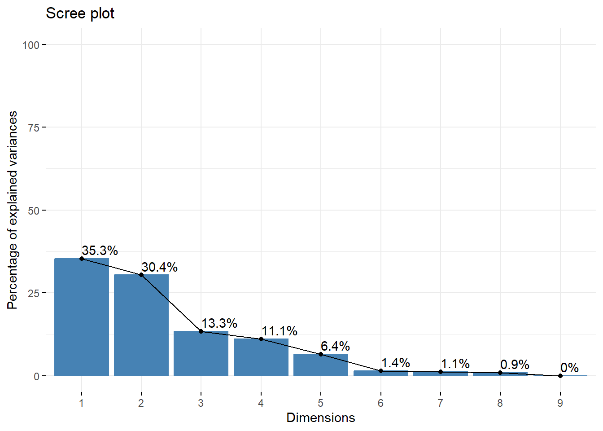
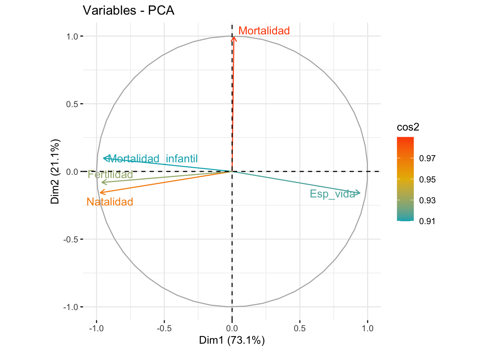

Rows: 1,073
Columns: 14
$ Country <chr> "Afghanistan", "Afghanistan", "Afghanistan", "…
$ Year <dbl> 2017, 2018, 2019, 2020, 2021, 2017, 2018, 2019…
$ `Total Population` <chr> "-", "36,686,784", "37,769,499", "38,972,230",…
$ `Urban Population` <chr> "-", "9,353,296", "9,727,157", "10,142,913", "…
$ `Rural Population` <chr> "-", "27,333,488", "28,042,342", "28,829,317",…
$ `Population Density` <chr> "55", "56", "58", "60", "-", "105", "105", "10…
$ `Life Expectancy` <chr> "63.0", "63.0", "64.0", "63.0", "62.0", "79.0"…
$ `Birth Rate` <dbl> 37.342, 36.927, 36.466, 36.051, 35.842, 10.870…
$ `Death Rate` <dbl> 7.027, 6.981, 6.791, 7.113, 7.344, 8.150, 8.30…
$ `Fertility Rate` <chr> "5.129", "5.002", "4.87", "4.75", "4.643", "1.…
$ `Infant Mortality Rate` <chr> "49.4", "47.8", "46.3", "44.8", "43.4", "8.3",…
$ `Growth Rate` <chr> "-", "3.0", "3.0", "3.0", "3.0", "-", "0.0", "…
$ Continent <chr> "Asia", "Asia", "Asia", "Asia", "Asia", "Europ…
$ Area_km2 <dbl> 652230, 652230, 652230, 652230, 652230, 28748,…Práctica clustering
Cosas que hay que hacer:
- Resumen de los datos para contextualizar
- ACP
- Clustering (entiendo yo que habrá que hacerlo de un par de formas)
Carga de datos de la exposición
# A tibble: 5 × 14
Año Pais Continente Area_km2 Pob_total Pob_urbana Pob_rural Densidad
<chr> <int> <int> <int> <int> <int> <int> <int>
1 2017 0 23 23 209 209 209 11
2 2018 0 24 24 0 2 12 13
3 2019 0 24 24 0 2 12 13
4 2020 0 24 24 0 2 12 13
5 2021 0 24 24 0 2 12 216
# ℹ 6 more variables: Esp_vida <int>, Natalidad <int>, Mortalidad <int>,
# Mortalidad_infantil <int>, Fertilidad <int>, Crecimiento <int>Análisis de componentes principales
Realicemos un análisis de componentes principales; empezaremos seleccionando los datos numéricos de nuestra tabla de datos. Recordemos que en el análisis exploratorio, si agrupábamos los datos por la variable Año, no había grandes diferencias entre los tres años resultantes: por ello, vamos a considerar solo el año 2019 para llevar a cabo nuestro ACP.
Rows: 183
Columns: 9
$ Area_km2 <dbl> 652230, 28748, 2381741, 1246700, 442, 2780400, 297…
$ Pob_total <dbl> 37769499, 2854191, 42705368, 32353588, 92117, 4493…
$ Pob_urbana <dbl> 9727157, 1747593, 31255632, 21410634, 22574, 41339…
$ Pob_rural <dbl> 28042342, 1106598, 11449736, 10942954, 69543, 3599…
$ Densidad <int> 58, 104, 18, 26, 209, 16, 99, 3, 108, 121, 40, 652…
$ Esp_vida <int> 64, 79, 76, 62, 79, 77, 75, 83, 82, 73, 71, 77, 74…
$ Natalidad <dbl> 36.466, 10.343, 23.298, 39.725, 11.485, 14.783, 12…
$ Mortalidad <dbl> 6.791, 8.480, 4.392, 7.811, 5.865, 7.600, 9.662, 6…
$ Mortalidad_infantil <dbl> 46.3, 8.4, 20.1, 50.4, 5.5, 7.6, 10.5, 3.2, 2.9, 1…Comentario Marga: tenemos que determinar si hacemos princomp o prcomp, si escalamos los datos o no y si utilizamos la matriz de covarianzas o correlaciones
Empezamos ahora con el ACP. Vamos a utilizar la matriz de correlaciones o covarianzas y vamos a escalar los datos, debido a que no están tomados con las mismas magnitudes. El resultado que obtenemos es el siguiente:
Standard deviations (1, .., p=9):
[1] 1.783025e+00 1.653352e+00 1.094628e+00 1.000106e+00 7.604840e-01
[6] 3.543283e-01 3.195577e-01 2.877906e-01 1.722135e-16
Rotation (n x k) = (9 x 9):
PC1 PC2 PC3 PC4
Area_km2 0.315980258 0.10054411 0.45732949 0.288851968
Pob_total 0.510789699 0.22951803 -0.06587213 -0.054033871
Pob_urbana 0.512936389 0.18687958 0.03058829 0.003517938
Pob_rural 0.464297817 0.25080483 -0.15345090 -0.105005537
Densidad 0.101158531 -0.08497832 -0.71439957 -0.387336247
Esp_vida 0.224285644 -0.52933201 -0.02807966 0.129226322
Natalidad -0.234115749 0.51426487 -0.10406968 0.147723450
Mortalidad -0.008439318 -0.02553716 0.48973321 -0.839231305
Mortalidad_infantil -0.212498598 0.53558484 -0.01426328 -0.098722492
PC5 PC6 PC7 PC8
Area_km2 -0.73696438 0.2302031380 -0.02999805 -0.021254818
Pob_total 0.17763982 -0.0309778913 0.02004954 0.004526544
Pob_urbana 0.03685671 -0.7235006922 0.02369123 0.068106922
Pob_rural 0.29837346 0.6415964570 0.01478352 -0.057368669
Densidad -0.56726327 -0.0098893839 0.01317439 0.009515436
Esp_vida 0.05855556 -0.0424408923 0.19343865 -0.780619733
Natalidad -0.07332561 -0.0339105442 0.77579755 -0.199199238
Mortalidad -0.03800599 0.0004319783 0.21273130 -0.091812739
Mortalidad_infantil -0.05389792 -0.0888733901 -0.55965148 -0.577953631
PC9
Area_km2 -6.266808e-17
Pob_total -8.038772e-01
Pob_urbana 4.135369e-01
Pob_rural 4.275145e-01
Densidad 8.326673e-17
Esp_vida -1.318390e-16
Natalidad 0.000000e+00
Mortalidad 1.387779e-17
Mortalidad_infantil -1.040834e-16Para entenderlo mejor, obtenemos los valores propios de cada componente:
eigenvalue variance.percent cumulative.variance.percent
Dim.1 3.179177e+00 3.532419e+01 35.32419
Dim.2 2.733574e+00 3.037305e+01 65.69724
Dim.3 1.198211e+00 1.331346e+01 79.01070
Dim.4 1.000212e+00 1.111347e+01 90.12417
Dim.5 5.783359e-01 6.425955e+00 96.55012
Dim.6 1.255485e-01 1.394984e+00 97.94511
Dim.7 1.021171e-01 1.134634e+00 99.07974
Dim.8 8.282343e-02 9.202604e-01 100.00000
Dim.9 2.965750e-32 3.295278e-31 100.00000Observemos que para explicar el 80% de los datos tendríamos que escoger tres componentes principales. Con el siguiente gráfico vamos a determinar si es necesario escoger una más.

Como la pendiente entre la tercera y la cuarta componente no es pronunciada, nos quedaremos con las tres primeras componentes principales.
No se si el grafico siguiente nos va a dar alguna info, porque tenemos 3 componenentes y solo nos representa 2
En el siguiente gráfico vemos como quedarían representadas cada una de las variables en el círculo de correlación variable.

Vamos a explicarlo detalladamente:
El color de cada variable indica cuan bien representadas están;
La longitud de las flechas nos indica que no todas las varibales tienen influencia en las componentes princpales.
¿Quitariais los outliers y comprovariais si hay cambios? Todo lo quye hay escrito abajo esta copiado de la práctica de pca, hay que cambiarlo todo
Vamos a realizar el mismo estudio, pero sin considerar los países que son outliers. Para ello, primero vamos a visualizar quiénes son estos países. Utilizamos la función boxplot():
Estos son:
Una vez hemos eliminado los outliers, repetimos el proceso anterior de realizar el ACP:
Veamos los valores propios de cada una de las componentes:
#get_eigenvalue(data.acp.outliers)Observando la última columna, vemos que con la primera componente explicamos el 72.43% de la información, y al considerar las dos primeras componentes, llegamos a un 91.32% de explicación de los datos. De nuevo, veámoslo en el siguiente gráfico de codo:
De nuevo, las pendientes de las rectas indican que con dos componentes principales és suficiente para dar una buena representación de los datos. Veámos con el siguiente gráfico cómo quedan representadas las variables en el círculo de correlación variable:
Lo primero que nos llama la atención és que la variable agricultura queda aislada del resto, esto nos indica que no presenta correlación con el resto de variables; además, los colores de las flechas nos indican cuán bien quedan representadas las variables, observamos que, de nuevo, la variable Agricultura és la que mejor queda representada, seguida de ‘Fábrica’ y ‘SSP’. Por último, la longitud de las flechas nos indica que no todas las varibales tienen la misma influencia en las componentes princpales. Así pues, “Min”, “Con”, “TC”, “Ene”, “IS” y “Fin” son variables con poca influencia Por el contrario, “Agricultura”, “Fábrica” y “SSP” tienen un mayor peso en este aspecto.
Ahora, veamos si podemos obtener una clasificación de los países por grupos a través de las dos componentes principales.
Como vemos, no hay una separación clara de los países en función de las componentes principales. Para poder analizar más en concreto este punto, consideraremos el siguiente gráfico:
En él, podemos ver los países coloreados en relación a la calidad de representación en el ACP. Los países representados por azul claro tienen una alta representación, como Polonia o Inlaterra, mientras que los países con un azul más oscuro no, como es el caso de Italia o Áustria. Observamos que, en este caso, la Unión Soviética queda mucho mejor representada por este ACP que por el que hemos hecho anteriormente.
Finalmente, veamos numéricamente como és la calidad de representación de las dos CP es la siguiente: